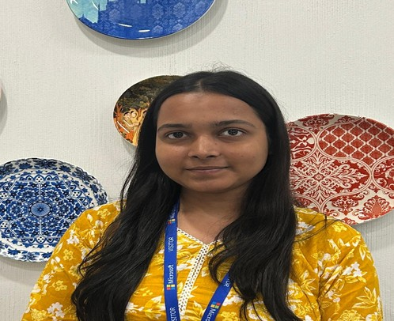

Hi, I'm Kelly Yadav, a Computer Science student at Mody University of Science & Technology. I build backend and full-stack products that handle real-time data, GPS signals, and AI integrations, from a Kalman-filtered GPS trust engine to a live coding battle platform.

I'm a backend-leaning full-stack developer. My projects usually start with messy real-world input, like noisy GPS coordinates, unstructured user descriptions, or a live multiplayer session, and turn it into something measurable and reliable.
Across three internships I've worked on Java backend development, AI tool integration, and Docker-based build and test environments. I've also taught Docker fundamentals to teammates and led a team of interns in an operations role.
Outside of code I crochet, sketch, and cook. I think the patience from craft carries over well to debugging.
250+ problems solved across platforms, including a 50 Days Badge on LeetCode in 2026.
Per-device Kalman filtering, GPS smoothing, and anomaly detection in GeoTrust.
Claude API in CodeArena for challenge generation and hints; Hugging Face image recognition in CaloriQ.
Docker, GitHub Actions, Linux, Git, and deployments on Render, Supabase, and Vercel.
Three flagship projects with architecture and engineering decisions, followed by smaller builds.
Phone GPS readings are noisy, and location can be spoofed. GeoTrust ingests raw coordinates over REST, returns a Kalman-filtered estimate for each device, flags impossible speeds and sudden jumps, and scores every point so downstream systems know how much to trust it.
A competitive coding platform where two players are matched, receive the same problem, and race to solve it in a Monaco Editor. The Claude API generates challenges and context-aware hints, and WebSockets keep both players in sync during a battle.
A full-stack nutrition tracker with personalised health goals, calorie logging, and real-time analytics. Supabase handles authentication, data, and live sync, and Hugging Face models recognise food from images.
Cybersecurity threat visualisation dashboard that renders hundreds of dynamic threat nodes with a custom requestAnimationFrame loop. Built with a three-member team using Git workflows and code reviews.
View live ↗Full-stack social platform with posts, comments, and a follow system. Spring Boot REST APIs, a MySQL schema for users, posts, and follows, and a React frontend.
GitHub →Real-time face detection with OpenCV to prevent proxy attendance, with movement checks against spoofing. Reached the finals of the GitLab Hackathon at IIT Bombay (2025).
GitHub →Architecture behind two of my projects, including the trade-offs I made and why.
GPS noise is not uniform. A Kalman filter keeps a running estimate of position and velocity and weighs each new reading by its uncertainty, so it tracks real movement while damping jitter. A moving average lags on turns and blurs real motion.
Both players need to see the battle state change without refreshing. A persistent WebSocket connection pushes updates in both directions, which suits a live 1v1 better than repeatedly polling the server.
Grouped by how I use them in projects, not just by what I've listed.
65+ certifications across platforms
Top-ranked nationally on the platform
250+ problems solved across platforms, including the LeetCode 50 Days Badge (2026)
Built the Face Recognition Attendance System (2025)
Full-stack project presented to an industry panel
Shipped CodeArena with Claude and CaloriQ with Hugging Face image recognition
Led content strategy and social media across 8+ fundraising events
Global women-in-tech community; technical talks on system design and distributed systems
Content creation and technical writing for college publications
Software development intern with three internships, live full-stack projects, and hands-on work with Spring Boot, React, PostgreSQL, Supabase, Docker, and AI APIs. B.Tech CSE at Mody University (2023–2027).
Latest version with internships, projects, and achievements.
Open to internships, full-time roles, freelance work, and collaborations. I usually reply within a day.
Send me an email →Java · Spring Boot · React · PostgreSQL · Docker · AI APIs · System Design